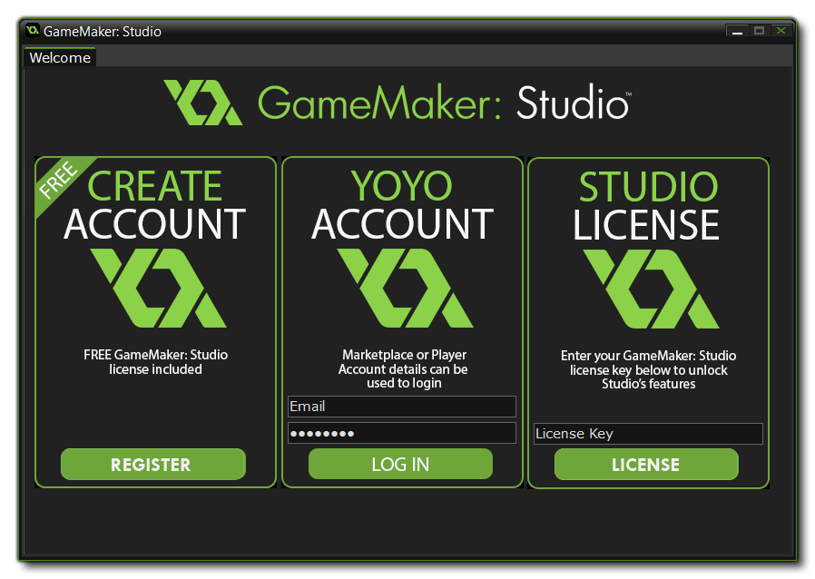

Once you have installed your version of GameMaker: Studio you will be shown the following Welcome screen:  From here you have three options:
After licensing you will be prompted to restart GameMaker:
Studio. If your licence has any extra modules attached to it, you
may be prompted to download additional files and then restart again
before you can access them.
At any time you can log into your YYA from a browser or from the
GameMaker: Studio IDE
Account Menu and see the licences you posses as well as modify
any of the account details.
While GameMaker: Studio itself does not require an internet connection to be used, it will require occasional access to maintain the license activated. If you cannot connect your computer to the internet for any long period of time, you can download the license check file from the YoYo Games website, and then point the auto update system to it. If you fail to provide a valid license file, or there is no internet connection when requested, your copy of GameMaker: Studio will not work until such time as this is resolved.
NOTE: These extra modules can only be bought if you
have already upgraded to GameMaker: Studio
- Professional.
GameMaker: Studio comes with a number of export options included
when you buy it: Windows and Mac OS X (and Steam Workshop if you
bought the program from Steam), as well as Windows 8 (Native) and
Windows 8 (JS). However additional modules can be purchased easily
from the YoYo Games Checkout. Once there, all you have to do is
fill in the required information (e-mail address and GameMaker:
Studio base license), then select the target module or modules that
you wish to add. After this has been done, clicking "Proceed" will
take you to the purchase page to confirm the sale. Finally, once
confirmed, you will be given the new license and an email with it
will be sent to the address you have given.
To use this License, you must now start GameMaker: Studio and go to
"Help", "Update License" and enter your new license
in the appropriate area. Once that is done, you should close
GameMaker: Studio and restart it to enjoy the functionality of the
new modules that you have purchased.
If you bought GameMaker: Studio through Steam you
can also purchase these modules easily on-line from the same
service, with no licence being required as Steam keeps track of
your details for you. To access the available modules, you must run
your Steam Client, go to the Library and right click on the
GameMaker: Studio entry. From the right click menu that pops
up you should select the option View Downloadable Content
which will open the application Properties window and there
you can select, buy and install the module of your choice.